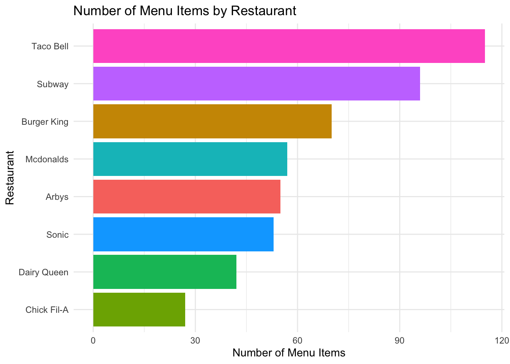

Introduction:
To understand how caloric content varies across different fast food restaurants, I analyzed a data set containing menu item information from multiple chains. After importing the data, I focused on the calories variable and used ggplot2 to create box plots of calorie counts for each restaurant. By using facet_wrap, I generated separate plots for each chain, allowing for side-by-side comparison of the distribution of calories per item. This visualization helps identify which restaurants tend to offer higher-calorie foods and which ones have more balanced or lower-calorie options.
Exploratory Analysis:
library(readxl)library(dplyr)library(tidyverse)library(tidyverse)library(readxl)# Load the dataFast_Food <-read_excel("Fast Food.xlsx")# Bar chart: number of menu items per restaurantFast_Food |>count(restaurant) |>ggplot(aes(x =reorder(restaurant, n), y = n, fill = restaurant)) +geom_col(show.legend =FALSE) +coord_flip() +labs(title ="Number of Menu Items by Restaurant",x ="Restaurant",y ="Number of Menu Items",alt ="Each restaurant is listed vertically along the side. Horizontal bars extend to the right — the longer the bar, the more menu items that restaurant has. The longest bar belongs to Mcdonald’s, meaning it has the most food items in the dataset. The shortest bars belong to Arby’s and Chick-fil-A, showing they have fewer items. This chart helps you visually compare how much each restaurant contributes to the data." ) +theme_minimal()

The bar chart shows how many menu items each fast food restaurant has in the data set. The y-axis lists the restaurant names, and the x-axis shows the number of menu items. McDonald’s has the longest bar, meaning it has the most items in the data set, followed by Burger King. Chick-fil-A and Arby’s have shorter bars, indicating they have fewer items. This chart helps us understand how much each restaurant contributes to the data before we analyze calorie content.
Variables:
restaurant: Name of the fast food chain (e.g., McDonald’s, Burger King).
item: Specific menu item.
calories: Total calories in the item.
cal_fat: Calories from fat.
total_fat: Total fat in grams.
saturated_fat: Saturated fat in grams.
trans_fat: Trans fat in grams.
cholesterol: Cholesterol in milligrams.
sodium: Sodium in milligrams.
total_carb: Total carbohydrates in grams.
fiber: Dietary fiber in grams.
sugar: Sugars in grams.
protein: Protein in grams.
vit_a: Vitamin A percentage of daily value.
vit_c: Vitamin C percentage of daily value.
calcium: Calcium percentage of daily value.
salad: Indicator if the item is a salad (TRUE/FALSE).
# Create a boxplot to visualize the distribution of calories for each restaurantggplot(Fast_Food, aes(x = calories)) +geom_boxplot(color ="darkred")+facet_wrap(~restaurant)+labs(title ="Calorie distribution of each restaurant's menu", alt ="This chart shows one box for each fast food restaurant, placed in its own panel. Each box represents the range of calorie values for that restaurant’s menu items. The horizontal axis shows calories, while each restaurant’s panel helps you compare them side by side. The line inside each box shows the median (typical) calorie count, and the length of the box shows how spread out the calorie values are. Some restaurants, like McDonald’s and Burger King, have wider boxes or more outliers, meaning their menus have a bigger variety of high- and low-calorie items. Others, like Chick-fil-A, have more tightly grouped calorie counts." )
This set of box plots displays the distribution of calorie counts for menu items at various fast food restaurants. Each panel represents a different chain, showing the spread of calories offered on their menus. The boxes illustrate the interquartile range (middle 50% of items), the horizontal line inside each box shows the median calorie count, and dots (if any) highlight outlier items with unusually high or low calories. This visual makes it easy to compare how calorie-dense different menus are across fast food brands.
Extra Credit:
library(tidyverse)library(readxl)library(plotly)# Read the dataFast_Food <-read_excel("Fast Food.xlsx")# Create corrected boxplotp <-ggplot(Fast_Food, aes(x = restaurant, y = calories)) +geom_boxplot(color ="darkred") +labs(title ="Calorie Distribution by Restaurant",x ="Restaurant", y ="Calories", alt ="This chart shows a box for each restaurant, comparing the range of calories across their menu items. The x-axis lists the restaurants, and the y-axis shows the calorie values. Each box displays how calorie counts vary within a restaurant. The middle line in each box shows the median (typical) calorie count, and the height of the box shows how spread out the items are. You can hover over each box to see exact values, making it easy to explore differences. Restaurants like McDonald’s and Burger King have higher and more spread-out calorie ranges, while others like Chick-fil-A have tighter, lower distributions.") +theme_minimal() +theme(axis.text.x =element_text(angle =45, hjust =1))# Convert to interactive plotinteractive_plot <-ggplotly(p)interactive_plot
For my extra credit, I improved my original fast food calorie graph by turning it from a regular static chart into an interactive one using Plotly. My original graph used box plots to show how calories are spread out across different restaurants, which made it easy to spot things like medians and outliers. But the static version had some downsides in that it didn’t let viewers see exact values or easily compare restaurants, especially when the data overlapped. By switching to Plotly, I made the chart interactive so users can now hover over each box to see specific calorie numbers, zoom in on certain restaurants, and explore the data in more detail. This makes the chart easier to use and more interesting to look at. It also helps people better understand the differences in calorie content between restaurants by letting them explore the data on their own.
Who collected the data? The data was collected by Ellis Hughes and the R for Data Science Online Learning Community as part of the TidyTuesday project.
It was collected to provide a real-world data set for learners to practice data analysis, visualization, and coding skills in R.
Original source of the information: The original data comes from a data set hosted on Kaggle, which compiled nutrition facts from the menus of major fast food chains.
Who collected the data? The data was compiled by Fast Food Nutrition, an independent website that aggregates nutritional information from various fast-food chains.
Why it was collected? To provide consumers with accessible and comprehensive nutritional information for menu items at fast-food restaurants, aiding in informed dietary choices.
Original source of the information: The nutritional data originates from all the restaurant’s official nutritional disclosures and publicly available information.